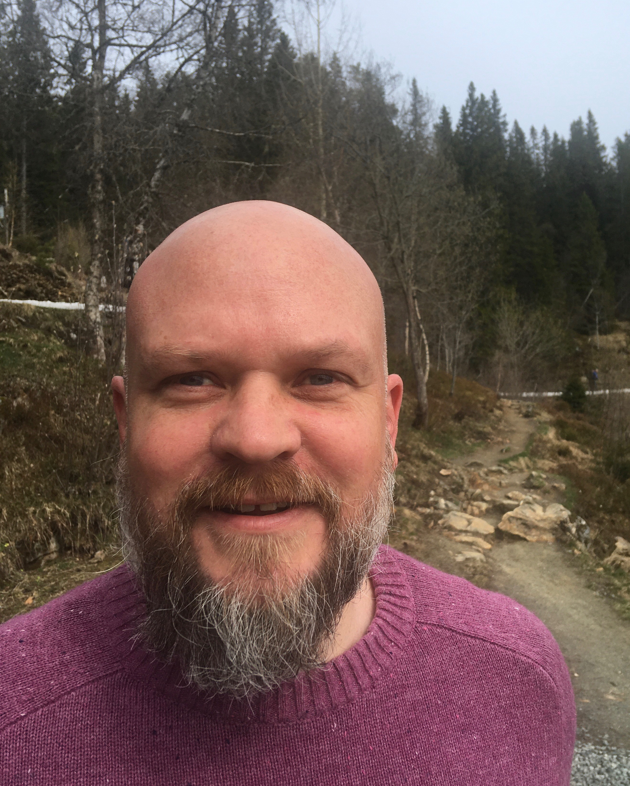
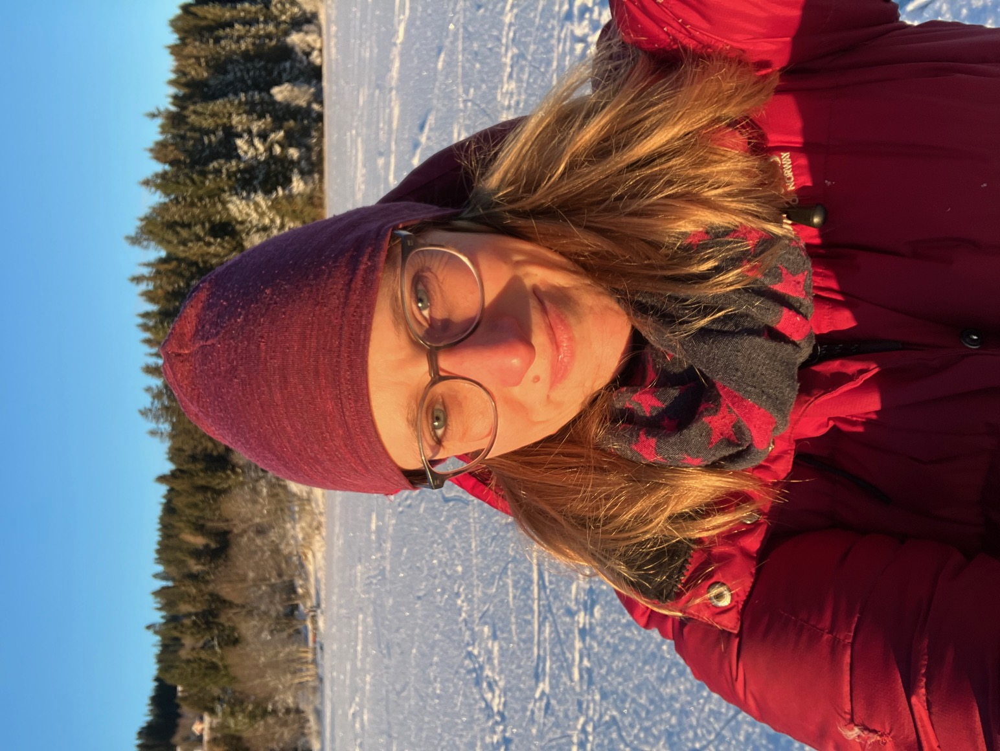
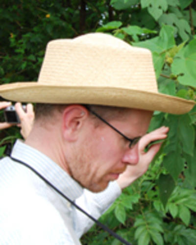
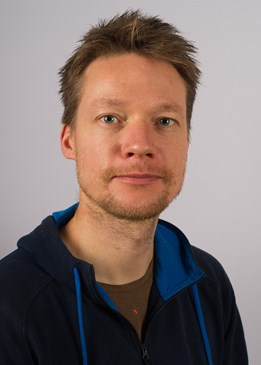
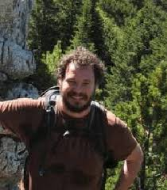

About Us
We are a group of ecologists, statisticians and everything in between, with interests in Open Science, reproducibility and transparency in Ecology.
Aud H. Halbritter

I am a researcher in plant ecology at the University of Bergen (Norway) interested in global change impacts on alpine biodiversity and ecosystem functions. For the last eight years, I have been part of developing bioST@TS, an online teaching and learning platform on data management and analysis for biology students. More recently, I have engaged in Open Science practice in my own research, supervision and teaching. I initiated and organize the Open Science Course in Ecology.
Matt Grainger

I am a researcher at NINA (Norwegian Institute for Nature Research) interested in evidence-based conservation and in metascience (“the science of science”). I am a part of the Living Norway Ecological Data Network and within that project focus on developing tools (e.g. R packages, Shiny Apps, etc.) and workflows to help researchers share their data openly and to make use of open data in their research. I am a member of the ESHackathon, an interdisciplinary community of practice making evidence-based decisions easier to achieve through opensource software, and SORTEE (Society for Open, Repeatable and Transparent Ecology and Evolution).
Dag Endresen
Dag Endresen is the GBIF node manager for the Norwegian Participant Node of the Global Biodiversity Information Facility.
.
.
.
Katrine Eldegard
I am a professor at the Norwegian University of Life Sciences (NMBU) interested in evidence-based management and conservation of wildlife populations and ecosystems. I am a part of the Living Norway Ecological Data Network and engaged in implementing open science practices in teaching and supervision at the university, and in my own research.
Stefanie Muff

I am an Associate Professor in Statistics at the Norwegian University of Science and Technology (NTNU) in Trondheim, Norway. I am collaborating with biologists and ecologists on a regular basis and is therefore having an intrinsic interest in open and reproducible science.
.
.
Richard J. Telford

I am a palaeoecologist at the University of Bergen (UiB), Norway. I am interested in quantitative palaeoecology, keen to make research in ecology and palaeoecology more reproducible and the organiser of R-klubben, a drop-in peer-to-peer R help session at the Department of Bioscience at UiB.
Erlend Nilsen
Senior research scientist at NINA.

Joe Chipperfield
Researcher at NINA
